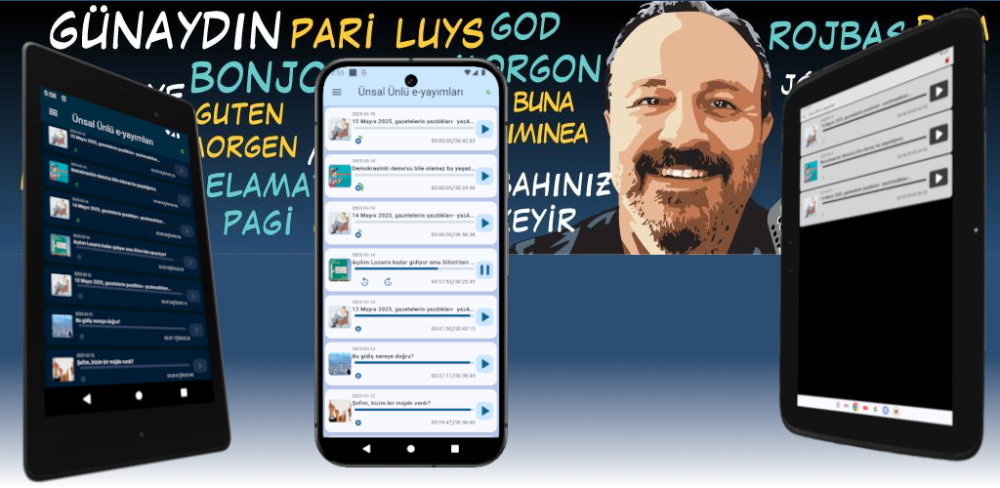

Ünsal Ünlü
daima
"yanınızda"
E-yayımları internet paketinizden fazla harcamayan ses dosyası formunda dinleyin
Pratik
E-yayımlar yeniden eskiye doğru sıralanarak listelenir
Oynatılan e-yayım bittiğinde daha güncel olanı otomatik olarak devam eder
Başka bir iş yaparken (örneğin araba kullanırken) dinlemek için çok idealdir: 'başlat ve unut' mantığı ile çalışır, sürekli müdahele gerektirmez
Ergonomik
E-yayımları
- oynatabilir
- duraklatabilir
- pozisyon değiştirebilir
- on saniye ileri/geri alabilirsiniz
Her e-yayım kaldığı yeri hatırlar ve tekrar oynatıldığında, uygulama kapatılsa bile, buradan devam eder
Devingen
Uyumlu Bluetooth ve kablolu kulaklıklarla birleşik çalışır
Eğer bağlantı kesilirse çalınmakta olan e-yayım duraksatılır. Bağlantı tekrar sağlandığında kaldığı yerden devam eder
Araç ses sistemine bağlı dinlerken büyük konfor sağlar: araç kontağı kapatıldığında duraksatılır, tekrar çalıştırıldığıda (eğer uygulama hala açıksa) kaldığı yerden devam eder.
Çevrimdışı dinlemek üzere indirme
E-yayımlar
- indirilebilir
- süreç izlenebilir
- vazgeçilebilir
- hata gözlenebilir
- yerelden dinlenebilir
E-yayımlar oynatılırken öncelikle indirilen dosyalar kontrol edilir. Eger yerel kopya varsa tekrar indirilmez, bu dosya kullanılır.
Kontrol Sizde!
Sistem belleğinde
- kullanılan alanın büyüklüğünü görebilir
- tüm e-yayımları silerek yer açabilirsiniz
Otomatik temizlik yapılmaz. Neyi ne zaman sileceğinize siz karar verirsiniz
Tema seçimi
Koyu ya da açık temayı seçebilirsiniz
- Menü -> Genel Ayarlar'dan
- Koyu tema kapatılırsa ya da
- Koyu tema açılırsa
uygulama ilgili temayı kullanır
Uygulama kurulduğunda temayı sistemden almak üzere tasarlanmıştır. Özel tema seçimi için bunu kapatmanız gerekir.
Koyu tema özellikle karanlıkta görünürlüğü sağlarken gözleri rahatsız etmemek için tasarlanmıştır. Gün ışığında açık tema kullanımı önerilir
Gizliliğinize saygılı
Bu uygulama
- sizin hakkınızda (telefon numaranız, konumunuz, arkadaşlarınız gibi) ya da
- uygulamayı kullanma alışkanlıklarınıza (hangi saatlerde, ne kadar süreyle, ne sıklıkla gibi) ilişkin olarak
herhangi bir bilgi toplamaya çalışmaz.
Uygulama üçüncü şahıslarla herhangi bir bilgi paylaşmaz
Ünsal Ünlü
daima
"yanınızda"
